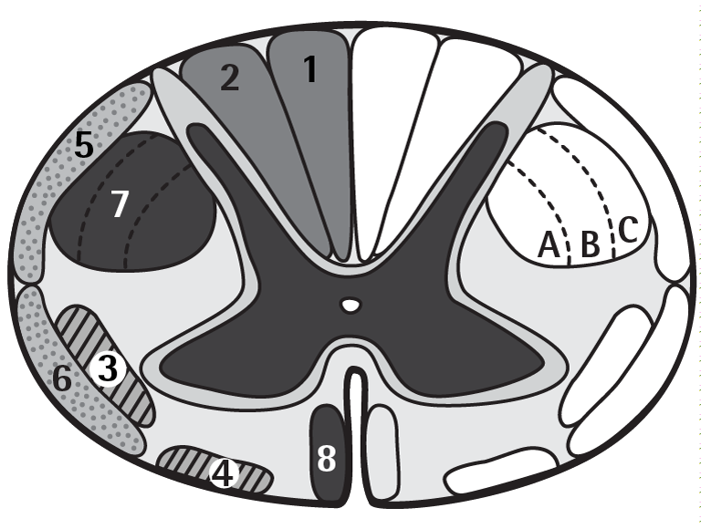

Cross-section
1. Gracile fasciculus (fine touch, proprioception, vibration)
2. Cuneate fasciculus (fine touch, fine pressure, vibration, proprioception)
3. Lateral spinothalamic tract (pain, temperature)
4. Anterior spinothalamic tract (crude touch, pressure)
5. Dorsal spinocerebellar tract (proprioception)
6. Anterior spinocerebellar tract (proprioception)
7. Lateral corticospinal tract (crossed pyramidal tract, A = arm, B = trunk, C = leg)
8. Anterior corticospinal tract (direct pyramidal tract)